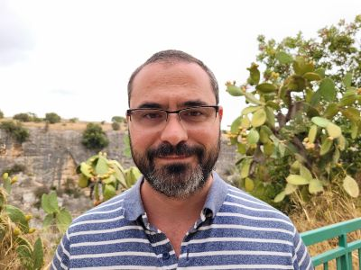

Associate Director @ Ipsos UK | Health Economist | EU Impact Assessment & Evaluation Specialist
Health economist and evaluation specialist with over 20 years of experience designing and leading rigorous impact evaluations for the European Commission, UK Government, World Bank, and Inter-American Development Bank.
Specialising in EU Better Regulation, with expertise spanning experimental designs (RCTs), quasi-experimental methods, and economic evaluation.
Lancaster University (UK) | 2019-2024
Thesis: Exploring the association between ethnicity and mental health inequities: A study of ethnic minorities in the UK
College of Europe (Bruges, Belgium) | 2012-2013
Awarded College of Europe - MAE Italy Scholarship
Universidad Nacional de Córdoba (Argentina) | 2002-2007
Specialisation: Industrial Organisation, Advanced Macro and Microeconomics
Does more education improve mental health for ethnic minorities in the UK? The impact of ROSLA 1972 — Submitted
An intersectional Oaxaca-Blinder decomposition of the ethnic and sex mental health inequities in the UK — Work in progress
A systematic review of the relationship between ethnicity and mental health inequities in the UK — Work in progress
Power Panel — Interactive web app for statistical power analysis of panel data designs (DID, CITS, ITS). Based on Schochet (2022, JEBS). Built in Python/Streamlit.
HERRERA, F. (2024). Exploring the association between ethnicity and mental health inequities: A study of ethnic minorities in the UK. [Doctoral Thesis, Lancaster University].
BOULDING, H., KAMENETZKY, A., GHIGA, I., IOPPOLO, B., HERRERA, F., PARKS, S., MANVILLE, C., GUTHRIE, S. AND HINRICHS-KRAPELS, S. (2020). Mechanisms and pathways to impact in public health research: a preliminary analysis of research funded by the National Institute for Health Research (NIHR). BMC Medical Research Methodology, 20(1), pp.1-20.
DEPARTMENT OF EDUCATION (2018). The Cadet Experience: Understanding Cadet Outcomes. Research Report.
HARTE, E., HERRERA, F., STEPANEK, M. (2016). Education of EU migrant children in EU Member States. Santa Monica, CA: RAND Corporation.
MEIERKORD, A., DONLEVY, D., PENSIERO, N., HERRERA, F., & GREEN, A. D. (2016). Study of the Link between the Levels of Basic Competences and Formal Educational Attainment in a Cross-Country and Comparative Perspective. European Commission.
HERRERA, F. (2013). From flexicurity towards flexicapability. College of Europe.
HERRERA, F. (2006). Crecimiento del Producto Bruto Geográfico de las Provincias Argentinas. Jornadas Internacionales de Finanzas Públicas, Córdoba.